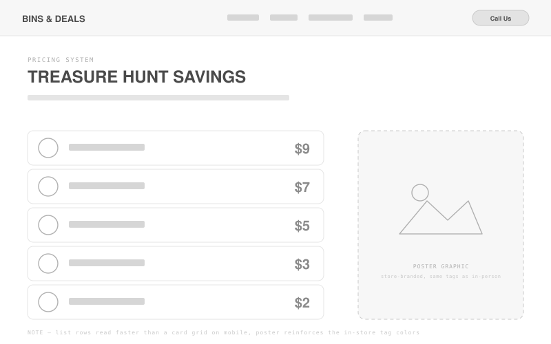
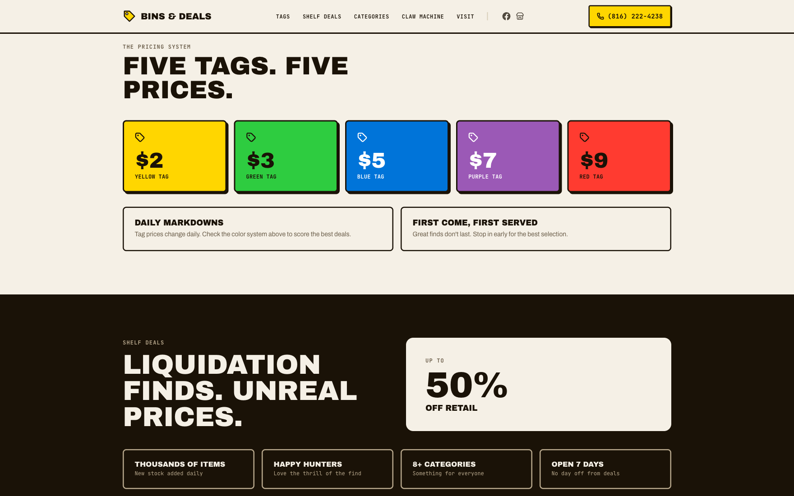
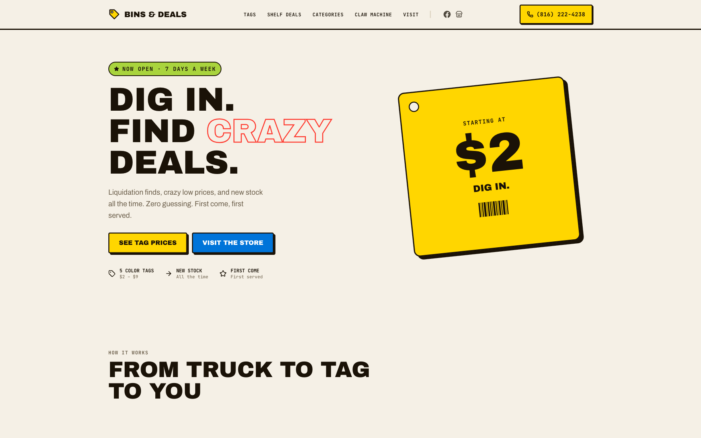
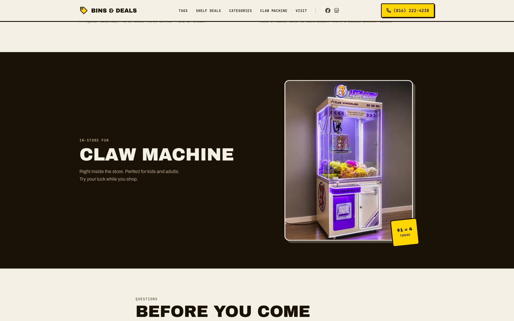
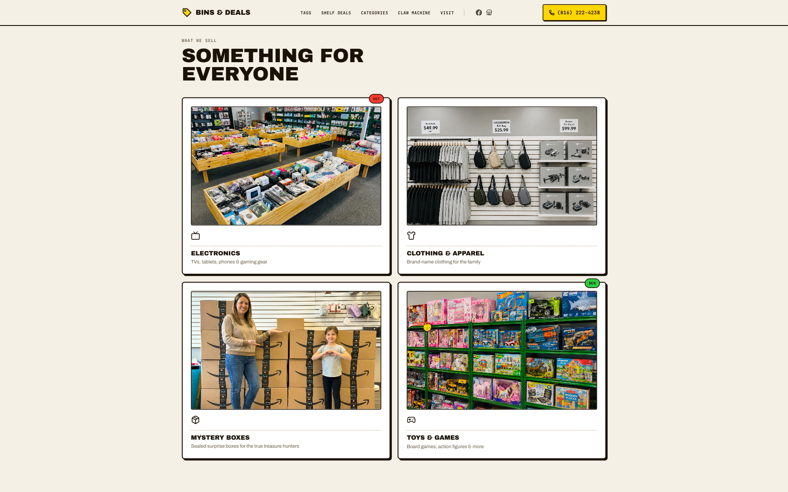
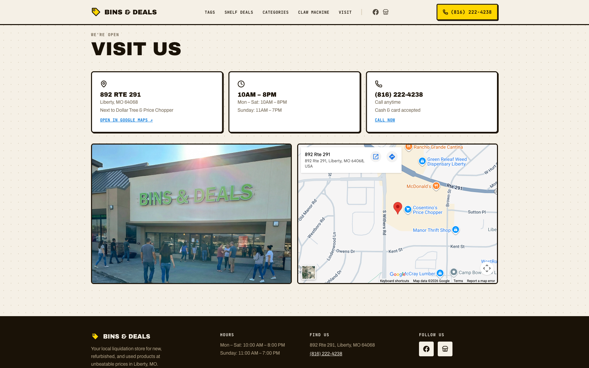

Bins & Deals — retail liquidation, clear enough for first-timers.
Brand, design, and front-end build for a live liquidation store. The real goal wasn't more features, it was less confusion before someone even walked through the door.
The store relied on word-of-mouth, but first-timers bounced before they understood what they were walking into.
Customers didn't get the liquidation pricing model, didn't know what categories the store carried, and had no real sense of how the place ran day to day. There was no centralized digital presence, just scattered social posts and a physical address. So most design decisions came down to one question: what does someone need to know before they drive over?
The same handful of questions kept coming up, at the register, in Facebook comments, over the phone: why are the prices so low, are these products used, how does the pricing actually work, what do you even sell, is it worth the drive. None of that lived anywhere online. Every answer happened one conversation at a time, which meant the staff had basically become the website. Every new customer needed the same explanation the last one got, and there was no way to make that scale.
The confusion wasn't really about the store. It was about explaining liquidation pricing, a business model most first-timers had never run into before.
What customers told us before a single section got designed.
I sat down with the owner first: business goals, customer behavior, which Facebook posts actually got engagement, what changes week to week versus what never does. Then I talked to customers at the counter over a few visits. I wasn't collecting feature requests. I was watching for whatever question kept coming up right before someone decided to actually shop.
People needed education, not another discount
Nobody was asking for a better deal. They were asking how the store worked. Understanding beat promotion as the thing that actually got people through the door.
Facebook created awareness, not understanding
A product photo in a Facebook post gets a like and a comment. It doesn't explain pricing, or that inventory turns over weekly, or what a "treasure hunt" store even means. The site had to fill in what a single post never could.
Mobile wasn't an edge case, it was almost everyone
Nearly every visitor arrived through a phone, clicking in from a Facebook post or a Marketplace listing. Designing desktop-first would've meant solving the wrong problem first.
Fewer sections worked better than more
Every extra section on the homepage competed with the one thing people actually needed to know next. It got clearer once each section answered exactly one question before moving to the next.
The product catalog I didn't build.
The obvious move for a retail site is a product catalog, something visitors can browse before they show up. I started sketching one and stopped partway through. Bins & Deals restocks every week, sometimes within days. A catalog would promise something the store couldn't back up: an item featured Monday morning might be gone by Monday afternoon.
So instead of showcasing inventory, the site needed to explain how the inventory works. Once customers understood the color-tag pricing and the fact that stock turns over constantly, the unpredictability stopped being a liability and started being the reason to come back.
Full ownership: UX, UI, front-end, SEO, and deployment.
Stakeholder
Sat down with the owner to pull out the operational rules, the questions customers kept asking, and what the business actually needed.
UX + Content
Looked at what customers kept asking, then built the content structure and hierarchy around first-time visitors.
UI + Build
React and Tailwind CSS over a CMS platform, since the owner needed direct control over promotional content and SEO without a subscription or platform lock-in, plus the Vercel deployment.
Acquisition Funnels
Facebook and Marketplace integration, since that's where most new visitors were actually coming from.
Constraints: This was a live client with real operational requirements, not a hypothetical. Pricing tiers, hours, categories: all of it had to match what was actually happening in the store. SEO needed to catch local search intent for a physical location.
Navigation built from actual questions, not a sitemap.
Before wireframing anything, I wrote out every question that kept coming up, from the owner, from customers at the counter, from Facebook comments, and matched each one to a section of the homepage. This is what that mapping actually looked like.
Hero: "What is this place?"
The first five seconds have to answer what the store is, what makes it different from a normal retailer, and why it's worth reading further.
Pricing System: "How does this pricing work?"
The section customers needed most and got least anywhere else. Color-tag cards do in a glance what a paragraph never could.
Shelf Deals: "Wait, is everything in bins?"
A real misconception: people assumed every item followed the color-tag system. Shelf items get their own explanation, priced individually and clearly marked.
Categories: "Will I actually find something I want?"
Nobody needs a live inventory feed. They need enough confidence that the categories they care about show up regularly.
Claw Machine: "Why would I bring my kids?"
A small, honest bonus, placed after the store already makes sense, not before.
Find Us Online + Hours & Location: "How do I keep up, and can I go today?"
Facebook and Marketplace links for ongoing inventory, plus the address, hours, and payment methods needed to actually make the trip.
Less confusion first. Features second.
Stakeholder Discussions
I interviewed the owner to find the questions customers asked most: "How does the pricing work?", "What kind of stuff do you carry?", "When are you open?" Those became the backbone of the site's content.
Content Architecture
I kept coming back to one question while structuring the site: if someone knows absolutely nothing about liquidation stores, what do they need to know before deciding to visit? Pricing model first, then inventory types, then hours and location, then social proof. Promotional features like the claw machine and weekly deals came in as secondary hooks, once the basics were covered.
Responsive Design
Built the site mobile-first, since most visitors were coming in from Facebook or Marketplace on their phones. The color-tag pricing system was designed to be scanned at a glance, not read like a table.
Build + Deployment
Built it in React and Tailwind CSS, then set up the SEO metadata, Open Graph tags for social sharing, and structured data for local search. Deployed to Vercel on a custom domain.
Six decisions the research forced.
Explain pricing before showing anything else
Most retail sites open with a hero, then featured products, then categories. That order backfires here. Showing $2 items before explaining why they're $2 makes people assume the worst: everything's broken, everything's fake, everything's picked over. So pricing comes first, right after the hero.
Structure the homepage around questions, not company sections
A typical small business site is organized around the business: About, Services, Gallery, Contact. Customers don't think that way. They show up with a specific question, usually about pricing, hours, or what's in stock. Every section on the homepage maps to one of those questions instead of a generic sitemap.
Treat Facebook as the start of the trip, not the competition
Most first-time visitors found the store through a Facebook post or a Marketplace listing before they ever hit the website. The site isn't trying to replace that. It picks up where Facebook leaves off, then hands people back to Facebook for what's new that week.
Mobile-first wasn't a checkbox, it was the actual brief
If most people are opening this from a Facebook link on their phone, "responsive" isn't enough on its own. Every section had to work as a single vertical scroll: big type, short paragraphs, a pricing system built to be scanned in three seconds, not read like a table.
Keep the visual design out of the way of the information
It would've been easy to lean on gradients, animation, and a busier layout to make the site feel more polished. All of that competes with the one thing people actually need. Typography carries the hierarchy. Color shows up only where it means something, on the pricing cards and the primary buttons.
Answer every practical question before asking for the visit
Driving to a store and finding it closed, or in a part of town you don't recognize, kills trust fast. Hours, address, nearby landmarks, accepted payment methods, and the shelf-versus-bin pricing distinction all needed to be obvious, not buried in a footer.
The pricing section, lo-fi to final.
This is the one section that had to work before anything else did. The lo-fi pass tested whether the tag color could carry the whole card, not just sit in a swatch next to the price. It could. What changed on the way to final was making that literal: each card is filled edge to edge in its tag color, so the color reads before the price does.

Five square cards, one tag per card, no color yet. The only thing being tested here was whether a full-color card would register faster than a small swatch, especially at a glance on a phone.

Same five cards, now each one fully filled in its real tag color with the price in bold on top. Two short panels underneath do the explaining: prices drop daily, and it's first come, first served.
The one section with the most riding on it.
The pricing section carries more research than anywhere else on the site. Each callout below points to a specific decision, and the insight that drove it.
The color fills the whole card. Ties back to how the tags actually work in the store: you spot the color first, from across the aisle, before you're close enough to read a number. The card had to work the same way.
Price is bold, label is quiet. The dollar amount is the thing people are scanning for. The tag name (Yellow, Green, Blue...) only matters once they've already found their price and want to match it to the physical tag.
Two rules, not five paragraphs. Daily markdowns and first-come-first-served are the only two things a shopper actually needs to know going in. Everything else is on the tag itself.
Clear enough for anyone who walks up to it.
The audience here isn't a trained user base. It's teenagers, retirees, parents on a lunch break, whoever clicks a Facebook link. Every decision below was about lowering the effort it takes to understand the page, not about checking a compliance box.
Readability before branding
Large headings do the section breaks. Prices, hours, and phone numbers sit out in the open instead of buried in a paragraph. Nobody should have to hunt for the one number they came for.
Color plus a label, always
The pricing rows use color because it matches the physical tags in the store, but every row also carries the price as text. Nobody has to guess a color to know what something costs.
Built for a thumb, not a cursor
Touch targets sized for a thumb, generous spacing between tappable elements, no accidental taps between sections while scrolling one-handed.
Semantic HTML, on purpose
Real headings, real buttons, real links, not styled divs pretending to be them. It reads correctly for a screen reader, and it happens to help local search results too.
Key screens from the live site.




"This project was not about adding more features. It was about reducing confusion. Most design decisions focused on helping new customers quickly understand how liquidation pricing works before they visit the store."
Client, Bins & Deals owner
Live, shipped, and in front of customers.
The site launched at binsanddeals.com and is now the store's main digital presence. Customers coming in from Facebook or Marketplace can check the pricing model, hours, and location before they ever visit. The color-tag pricing system took care of the most common source of pre-visit confusion.
Facebook still does what it always did: showing new stock and pulling in curiosity. Marketplace still moves individual items. The site's job was narrower than either of those, filling in the pricing model, the categories, the hours, the actual address. Facebook creates the interest. The site turns that interest into someone who already knows what to expect before they open the door.
There was no analytics budget for a single-location store, so I tracked what the owner and staff could see with their own eyes: repeat questions at the counter and over the phone, and where new customers said they'd heard about the store in that first month.
Staff noticed the shift too. The same three questions that used to open every conversation at the counter mostly stopped needing to be asked.
What I'd do differently.
I'd wire up basic analytics before launch, not after. Call counts and staff-reported foot traffic are honest numbers, but they don't give you a real trend line. A lightweight pageview and referral setup from day one would let me show the trend instead of just describing it.
I'd also test the pricing explainer on a few real first-time customers before shipping it, not just the owner and staff. Internal feedback caught the obvious gaps, but the person the whole site was built for, someone who's never set foot in a liquidation store, never actually saw it before launch.
The site hasn't changed much since launch, and small business sites usually don't. I'd push for that to be different: a weekly featured-inventory callout, a couple of real customer quotes, more local SEO content. None of that needs to compromise how simple the site currently is.